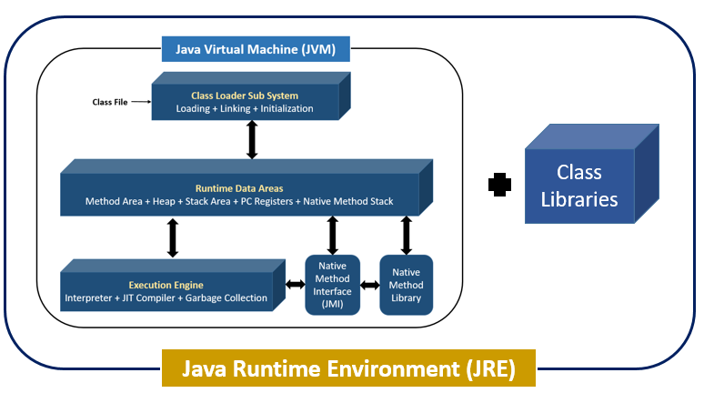

Java is a popular programming language for developing various applications, from desktop software to web applications and mobile apps. When working with Java, you may come across the terms JDK, JRE, and JVM, all of which are important components of the Java ecosystem.
JDK, JRE, and JVM are three distinct components used to run Java applications, but they each serve a different purpose. Understanding the differences between these components is important for Java developers and anyone else who works with Java applications. This blog post will explore the differences between JDK, JRE, and JVM and explain why each component is important in Java development.
Difference between JVM, JRE, and JDK
Below is a table differentiating between JVM, JRE and JDK.
|
Feature |
1. JVM (Java Virtual Machine) |
2. JRE (Java Runtime Environment) |
3. JDK (Java Development Kit) |
|
Definition |
The engine that executes Java bytecode, providing a runtime environment for Java applications. |
A package that includes the JVM and libraries Java applications need to run. |
A comprehensive toolkit for developing Java applications, including the JRE, compilers, and tools. |
|
Components |
Bytecode interpreter, Just-In-Time (JIT) compiler, Garbage Collector. |
JVM, core libraries, and other components to support Java application execution. |
JRE, javac compiler, tools for Java application development (e.g., debugger, javadoc). |
|
Purpose |
To provide a platform-independent way of executing Java bytecode. |
To provide the runtime environment necessary for executing Java applications. |
To provide developers with the tools needed to develop, compile, and debug Java applications. |
|
Usage |
Used by developers indirectly through the JRE or JDK. |
Used by anyone wanting to run Java applications. |
Used by Java developers for application development. |
1. What is JVM?
Java Virtual Machine (JVM) is an abstract machine responsible for compiling and executing Java code. It is a part of the Java Runtime Environment (JRE), which calls the main function of a program.
- JVM facilitates a platform-independent way of executing Java source code. Its basis on WORA (Write Once Run Anywhere).
- It has a class loader, runtime data area, execution engine, and libraries.
- JVM comes with JIT(Just-in-Time) compiler that converts Java source code into machine code.

First, the Java compiler compiles a Java file into a Java .class file. Then, the .class file works as an input into the JVM, which loads and executes the class file.
Features of JVM
- It converts byte code to the machine language.
- JVM provides basic Java functions like memory management, security, garbage collection, etc.
- Runs the program by utilizing JRE’s libraries and files.
- JVM is an integral part of JRE.
- It can execute the Java program line by line. Therefore, it is also known as an interpreter.
- The main functions of JVM include loading, linking, initializing, and compiling the program.
Note: JVM can’t be installed alone. As JVM is a part of JRE, you need to install JRE. JVM comes within it.
2. What is JRE?
JRE software includes JVM and class libraries to run Java programs independently. Although it can execute the code. Yet, JRE comes bundled with Java Development Kit (JDK) to provide a complete application development experience.
- The JRE includes class libraries along with JVM and its supporting files. Note: It does not include separate tools, such as a debugger for Java development.
- JRE comprises significant package classes such as util, math, AWT, lang, and various runtime libraries.
JRE = JVM + Class Libraries (For Running the Java Applications).

Features of JRE
- JRE consists of a set of tools to help the JVM run. In addition, it includes a few deployment tools such as Java Plug-in and Java Web Start.
- A User can efficiently run a Java code with JRE only. However, JRE doesn’t allow writing the program.
- JRE appends various integration libraries like the JDBC (Java Database Connectivity), JNDI (Java Naming and Directory Interface), RMI (Remote Method Invocation), etc.
- Along with JVM, it consists of a virtual machine client for Java HotSpot.
3. What is JDK?
Java Development Kit (JDK) is a complete software environment for building applications and applets using the Java programming language. It is platform-dependent. Therefore, it has different OS platform versions for Windows, Linux, Mac, etc. It allows reading, writing, and executing the Java program.
- Includes various tools required for writing Java programs.
- It includes an applet viewer, Java application launcher, debugger, compiler, etc.
- JDK also consists of JRE for executing Java programs.
- The Java application launcher helps in opening a JRE. Then, it loads the necessary details and executes the program’s main method.
JDK = Development Tools + JRE (Java Runtime Environment)

Features of JDK
- JDK provides an environment for developing and executing the Java source code.
- It includes all the functionalities of JRE and JVM.
- JDK helps developers handle the exceptions using multiple extensions in a single catch block.
- It has various other development tools like the debugger, compiler, etc.
- It is platform-dependent. Moreover, users can easily install JDK on Operating systems like Unix, Mac, Windows, etc.
FAQs
What is JDK?
JDK stands for Java Development Kit. It is a software development kit that includes all the tools necessary to develop and compile Java applications, including the Java compiler, debugger, and other development tools.
What is JRE?
JRE stands for Java Runtime Environment. It is a software package that is required to run Java applications. It includes the Java Virtual Machine (JVM), class libraries, and other runtime components.
What is JVM?
JVM stands for Java Virtual Machine. The software component executes Java bytecode, the compiled form of Java source code. The JVM provides a platform-independent runtime environment for Java applications, allowing them to run on any platform that supports the JVM.
From where can I download the latest JDK?
You can go to the Oracle website to download the latest free version of JDK safely.
What is the relationship between JVM, JRE, and JDK?
JVM is a component of both JRE and JDK. JRE includes the JVM and other runtime components, while JDK includes both the JVM and development tools for Java application development.
What is the difference between JDK and JRE?
The main difference between JDK and JRE is that JDK is used for Java application development, while JRE is used for running Java applications. JDK includes tools for developing and compiling Java code, while JRE only includes the components necessary for running Java applications.
Do I need all three components (JDK, JRE, and JVM) to run Java applications?
No, you only need JRE to run Java applications. However, if you want to develop Java applications, you will need JDK, which includes both the JVM and development tools.
Can I use a different JVM than the one included in JRE or JDK?
Yes, it is possible to use a different JVM than the one included in JRE or JDK, but it may require additional configuration and setup.